The slide of the lecture is on the left, the same figure or table on the right, computed in the browser from the same data. The ▶ button moves the parameter step by step; the tables and worked examples are recomputed with it. Abbreviations: VaR (value at risk), ES (expected shortfall), HS (historical simulation), EVT (extreme value theory), POT (peaks over threshold), GPD (generalised Pareto distribution), GARCH (generalised autoregressive conditional heteroskedasticity), FHS (filtered historical simulation), POF (proportion of failures), LR (likelihood ratio), BCBS (Basel Committee on Banking Supervision), FRTB (Fundamental Review of the Trading Book), MAR32 and MAR33 (chapters 32 and 33 of the Basel market risk standard), BVB (Bucharest Stock Exchange), CLT (central limit theorem).
VaR and ES: Definitions · Estimating VaR and ES · Conditional VaR: GARCH and Filtered Historical Simulation · Portfolio VaR and Dependence · Backtesting
VaR and ES: Definitions
VaR 1% and ES 2.5% of the S&P 500
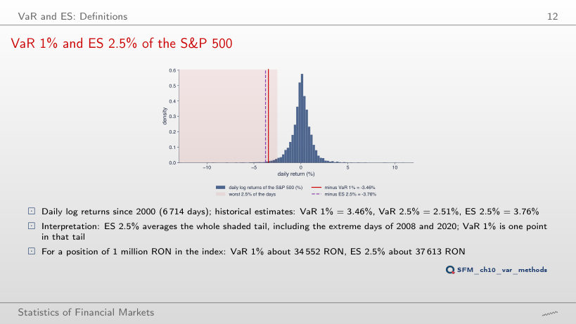
Answer
3.76%: the average of the worst 168 days, with the sign changed. VaR 2.5% = 2.51% is only the edge of this tail, while ES 2.5% averages the whole tail, including the days of 2008 and 2020. ES 2.5% and VaR 1% are close (3.76% against 3.46%), which is why FRTB could replace VaR 1% by ES 2.5% without changing the capital level much (BCBS (2019); BCBS (2023b)).
Worked Example: Normal VaR and ES of the S&P 500
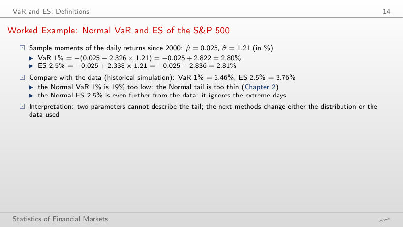
Worked example: Normal VaR and ES
Answer
It stays below the historical one everywhere, by 14–24%: 22% for the DAX, 23% for the BET, 24% for Bitcoin, 22% for TLV, 14% for SNP (S&P 500: 19%). Two parameters, the mean and the standard deviation, cannot describe a heavy tail: the Normal distribution puts too little probability beyond 2.3 standard deviations.
From One Day to Ten Days
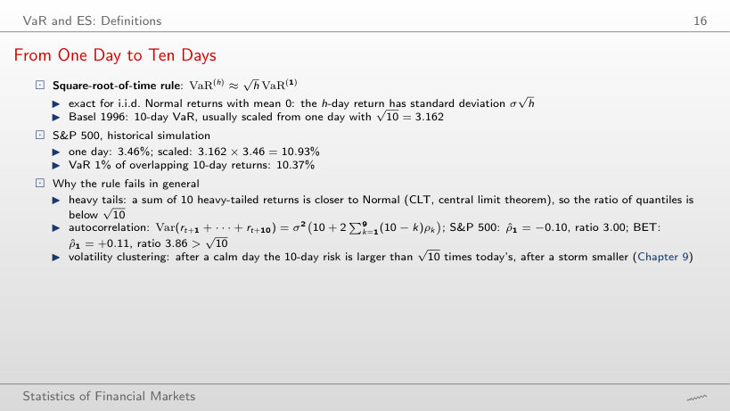
Answer
Below: 10.37%, that is 3.00 times the one-day VaR, against √10 = 3.16. The sum of 10 heavy-tailed returns is closer to the Normal distribution (CLT), and the first-order autocorrelation of the S&P 500 returns is −0.10, so consecutive days partly offset each other. For the BET the ratio is 3.86, above √10: its autocorrelation is +0.11.
Estimating VaR and ES
Historical Simulation
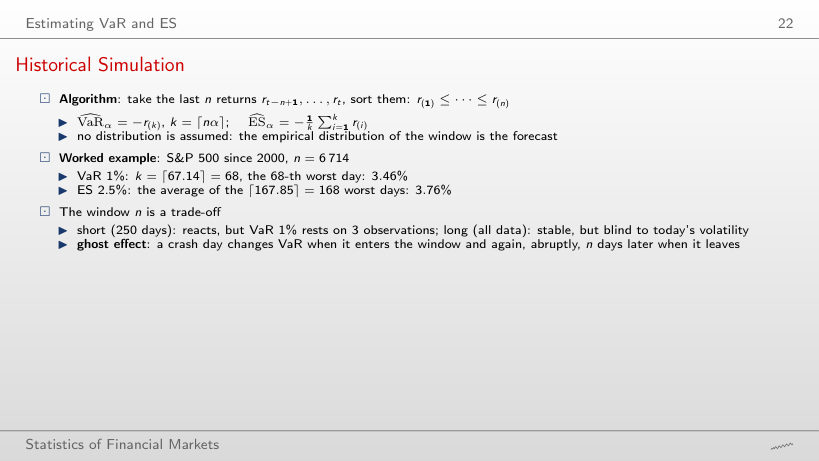
Worked example: historical VaR and ES
Answer
The third: k = ⌈250 × 0.01⌉ = ⌈2.5⌉ = 3. With 250 days, VaR 1% depends on 3 observations and ES 2.5% on 7 (⌈6.25⌉); on the whole sample of 6,714 days, VaR 1% is the 68th worst day.
How Precise Is a Historical VaR?
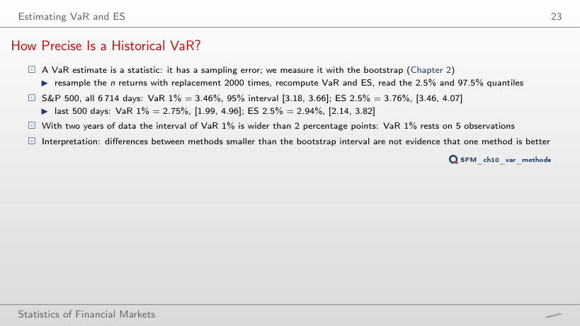
Answer
About 6 times: [1.99, 4.96], that is 2.97 percentage points, against [3.18, 3.66], that is 0.48. The √n rule would give √(6,714/500) = 3.7; the interval is wider because VaR 1% rests on the 5th worst day, and the five worst days of the window are far apart. On the last 250 days the interval is only 1.12 points wide: a window without extreme days looks precise although it has fewer observations.
The Cornish–Fisher Expansion
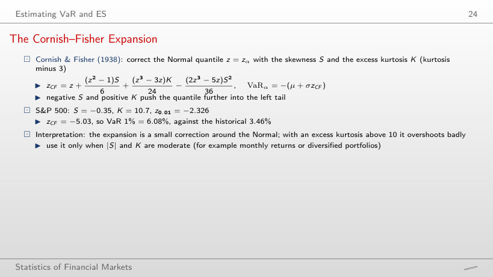
Worked example: the Cornish–Fisher quantile
Answer
It is almost double: 6.08%. The kurtosis term (z³ − 3z)K/24 = −2.49 alone adds more than the distance between the Normal and the empirical quantile; the expansion is a small correction around the Normal distribution and no longer holds when K exceeds 10.
EVT: Peaks over Threshold (Chapter 5)
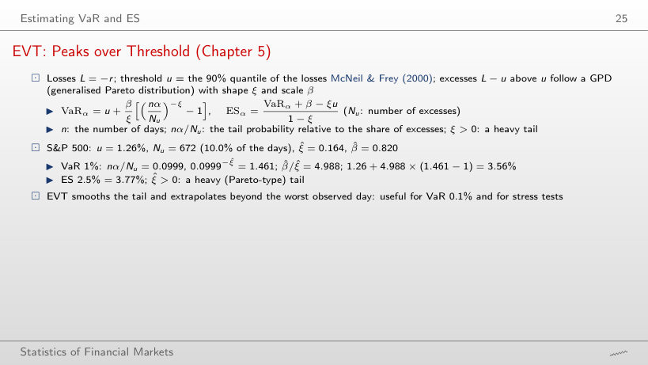
Worked example: VaR and ES from the GPD
Answer
It changes little: 3.56% at 90%, 3.54% at 95%, 3.50% at 97.5% (3.59% at 85%). ξ̂ rises from 0.16 to 0.23, but at 1% we are still close to the data used; the difference shows at 0.1%, where the EVT VaR moves from 6.91% to 7.13%.
VaR across Tail Probabilities
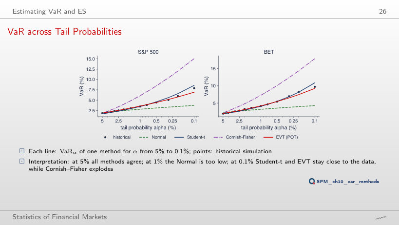
Answer
Cornish–Fisher: 15.06%, almost double the historical 7.90%. Student-t gives 8.58%, EVT 6.91%, the Normal distribution only 3.72%. At α = 5% all methods lie between 1.67% and 1.97%.
VaR 1% by Method on Six Series
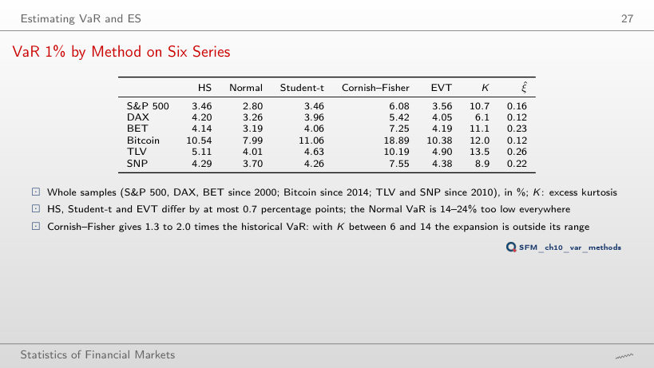
VaR by method, full samples, in % (K: excess kurtosis)
Answer
No: at 5% the Normal VaR is above the historical one for all six series, by 3–16% (S&P 500: 1.97% against 1.85%). A heavy-tailed distribution with the same variance has more probability in the centre and in the far tail and less on the "shoulders": its 5% quantile is closer to 0 than the Normal one.
ES 2.5% by Method on Six Series
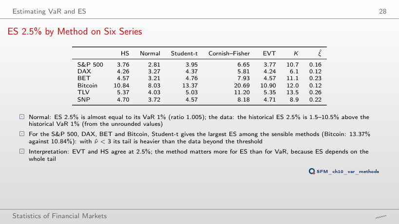
ES by method, full samples, in %
Answer
By 1.5–10.5%, depending on the series (DAX 1.5%, BET 10.5%, from the unrounded values). The historical ES 2.5% averages a longer tail than the Normal distribution predicts, so the ratio exceeds 1.005.
Conditional VaR: GARCH and Filtered Historical Simulation
Worked Example: the S&P 500 on 18 September 2026
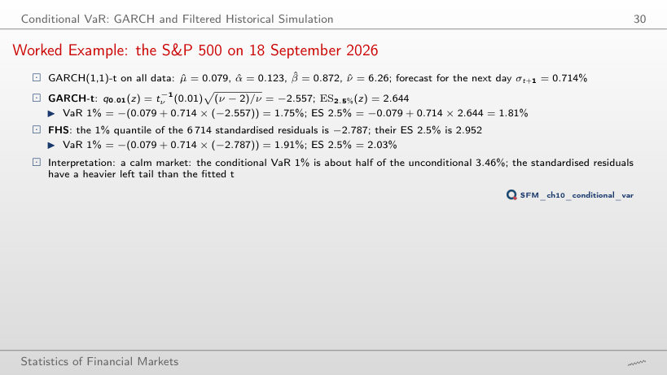
Worked example: conditional VaR and ES
Answer
It is about half: 1.75%. σ(t + 1) = 0.714% is far below the sample standard deviation of 1.21%: the market is calm. FHS gives 1.91%, because the standardised residuals have a 1% quantile of −2.787, lower than −2.557 for the fitted Student-t.
Next-Day VaR and ES on Six Series
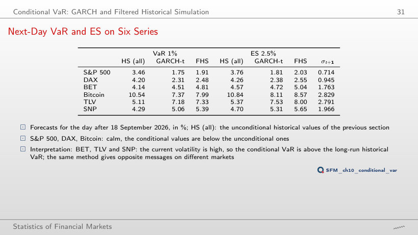
Forecasts for the day after 18 September 2026, in %
Answer
BET (4.51% against 4.14%), TLV (7.18% against 5.11%) and SNP (5.06% against 4.29%): current volatility is high there. For the S&P 500, the DAX and Bitcoin the period is calm.
VaR 1% through 2008 and 2020
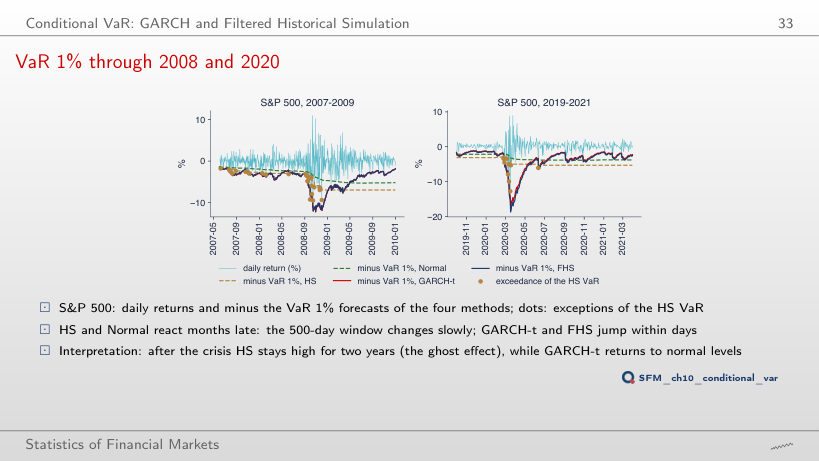
Answer
The Normal method: 44, against 27 for HS and 15 for GARCH-t and FHS. The 500-day window changes slowly, and the Normal distribution has too thin a tail; after the crisis, HS stays high for two years (ghost effect).
Stress Periods: Exceptions in 2008 and 2020
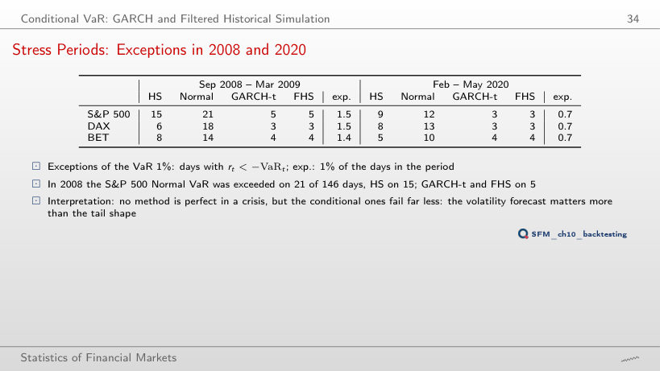
VaR exceptions: days with r(t) < −VaR(t)
Answer
21 times, against 1.46 expected; HS 15 times, GARCH-t and FHS 5 times each. The volatility forecast matters more than the shape of the tail.
Portfolio VaR and Dependence
The Variance–Covariance Method
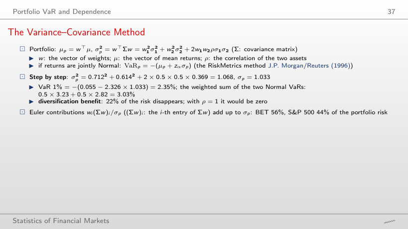
Worked example: VaR of the 50/50 portfolio
Answer
3.03%: the weighted sum of the two Normal VaRs, 0.5 × 3.23 + 0.5 × 2.82; the diversification benefit, 22% with ρ = 0.21, disappears. With ρ = 0.71 (spring 2020) the VaR is 2.80% and the benefit only 8%.
Correlation Rises in Crises
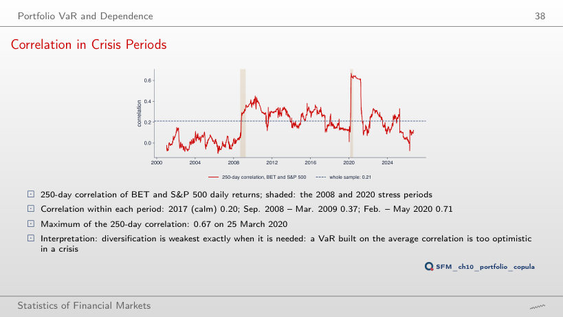
Answer
On 25 March 2020, at 0.67. The correlation within each period: 0.20 in 2017, 0.37 from September 2008 to March 2009, 0.71 from February to May 2020. The BVB trades until 17:45 Romanian time and New York opens at 16:30, so part of the New York move reaches Bucharest only the next day.
Correlation and Tail Dependence
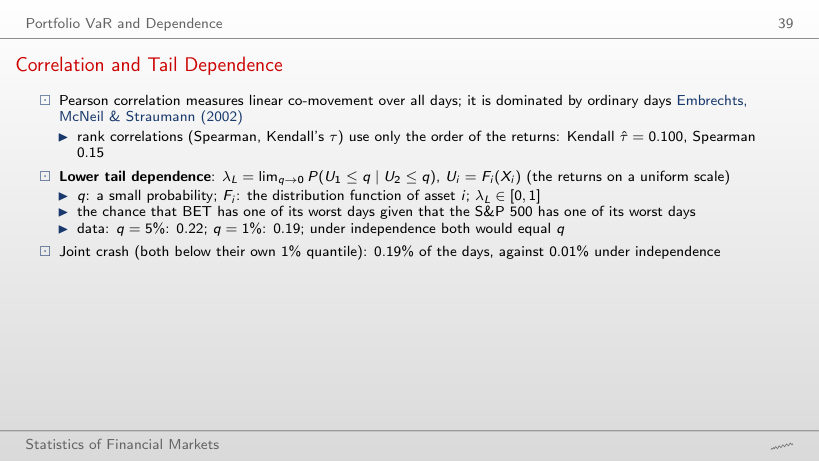
Answer
0.19, 19 times more than under independence (0.01). At q = 5% the probability is 0.22. The Pearson correlation of 0.21 is dominated by ordinary days and says nothing about how often the two indices fall together.
Gaussian and t Copulas
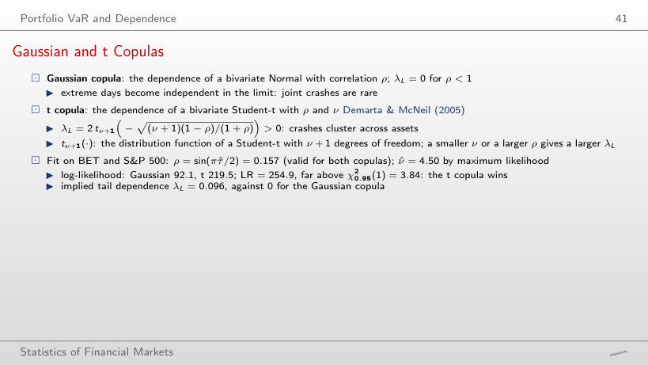
Worked example: lower tail dependence of the t copula
Answer
It falls towards 0: 0.096 at ν = 4.5, 0.016 at ν = 10 and practically 0 at ν = 40. As ν → ∞, the t copula becomes the Gaussian copula, which has λ_L = 0.
Joint Large Losses: Data and Two Copulas
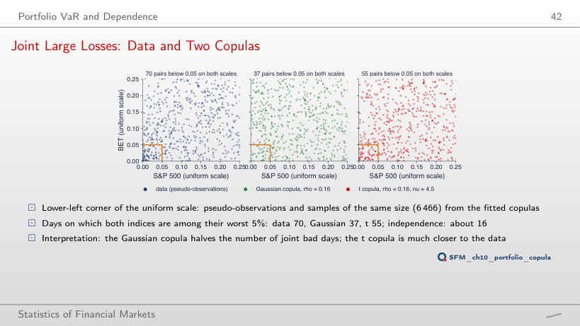
Answer
On 70 days, against about 16 (6,466 × 0.05²) under independence. The fitted Gaussian copula gives 37, the t copula 55: only the t copula reproduces part of the joint crashes.
Portfolio VaR 1% and ES 2.5% by Method
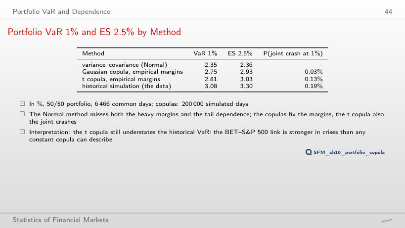
Portfolio VaR 1% and ES 2.5%, in %
Answer
Historical simulation: 3.08%. The t copula gives 2.81%, the Gaussian copula 2.75%, the variance–covariance method 2.35%. The t copula stays below the historical value: the link between the two indices is stronger in crises than a constant copula can describe.
Backtesting
Exceptions in 250 Days under a Correct VaR 1%
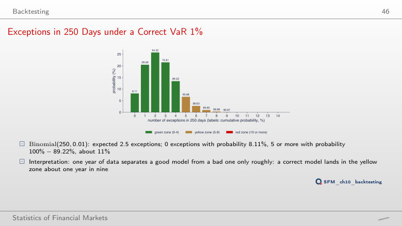
Answer
About 44% (P(X ≤ 4) = 43.9% under Binomial(250, 0.02)). One year of data separates a good model from a bad one only roughly; a correct model lands in the yellow zone with probability 10.8% (BCBS (1996b)).
Kupiec's POF Test
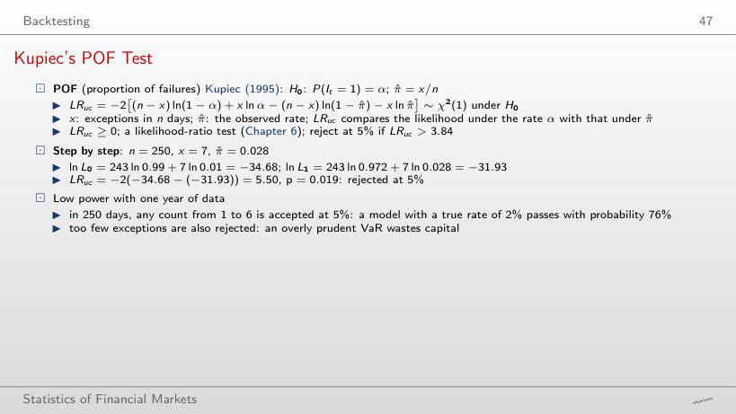
Worked example: the POF test
Answer
Yes: ln L₀ = 250 ln 0.99 = −2.51, ln L₁ = 0, LR_uc = 5.03 > 3.84. Too few exceptions point to an overly prudent VaR that wastes capital. With 250 days, the test does not reject only the counts from 1 to 6.
Kupiec on 21 Years of S&P 500 Forecasts
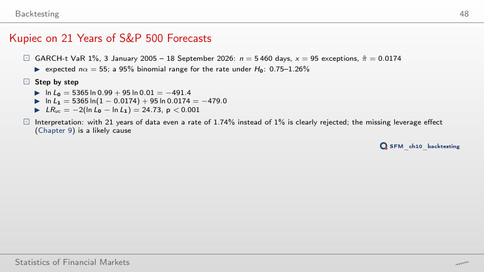
Worked example: Kupiec on the forecasts of the lecture
Answer
None: HS has the rate 1.41% (p = 0.004), FHS 1.58%, the Normal method 2.71% (both p < 0.001). With 5,460 days the test has high power and rejects even rates of 1.4%.
Christoffersen's Independence Test
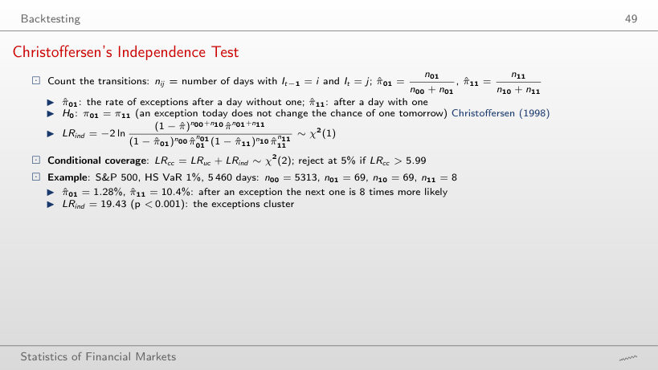
Worked example: independence and conditional coverage
Answer
HS (p < 0.001; π̂₁₁ = 10.4% against π̂₀₁ = 1.28%) and the Normal method (p < 0.001). GARCH-t (p = 0.114) and FHS (p = 0.060) are not rejected: the volatility forecast breaks up the clusters of exceptions. The test looks only at consecutive days.
The Basel Traffic Light
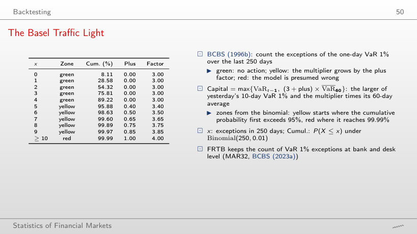
The Basel traffic light: Binomial(250, 0.01) (BCBS (1996b))
Worked example: the zone from the number of exceptions
Worked example: the capital requirement (BCBS (1996a))
Answer
3.50: P(X ≤ 6) = 98.63% is between 95% and 99.99%, so the yellow zone, with plus factor 0.50 (BCBS (1996b)). The capital is max{VaR(t − 1), 3.50 × 60-day average} (BCBS (1996a)); FRTB computes the capital from ES 2.5% (BCBS (2023b)), but the backtest still counts the exceptions of VaR 1% (BCBS (2023a)).
When Do the Exceptions Happen?
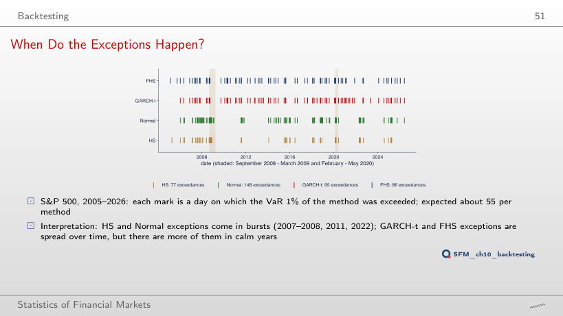
Answer
HS: 77, against 86 for FHS, 95 for GARCH-t and 148 for the Normal method; about 55 expected. HS has the fewest exceptions, but they come in clusters during crises, while the GARCH-t and FHS exceptions are spread out and more frequent in calm years.
Backtest Results: S&P 500 and DAX
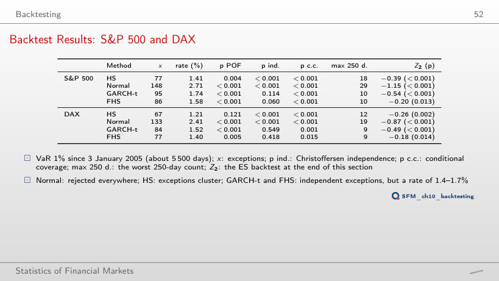
Backtests of VaR 1% (p ind.: Christoffersen independence; p c.c.: conditional coverage)
Answer
No: from 2015 its rate is 2.72% on the S&P 500 and 2.52% on the DAX, both with p < 0.001. Without 2008 the rate falls a little, but the Normal tail is still too thin.
Backtest Results: BET and Bitcoin
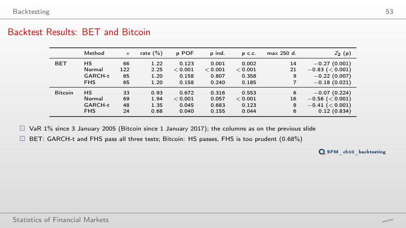
Backtests of VaR 1%, columns as in the previous table
Answer
GARCH-t (p 0.158, 0.807, 0.358) and FHS (p 0.158, 0.240, 0.185). HS passes POF (p = 0.123), but its exceptions come in clusters (p ind. 0.001).
Ranking the Forecasts, and Today's Zone
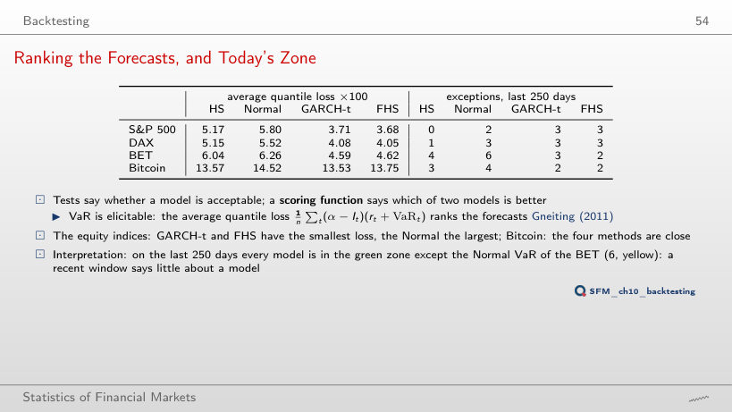
Mean quantile loss × 100 (in green: the smallest) and the exceptions of the last 250 days
Answer
GARCH-t, by a hair: 13.53 against 13.57 for HS, 13.75 for FHS and 14.52 for the Normal method. On the stock indices the differences are large (S&P 500: 3.68 for FHS, 5.80 for the Normal method); on Bitcoin the four methods are close.
The Traffic Light through Time
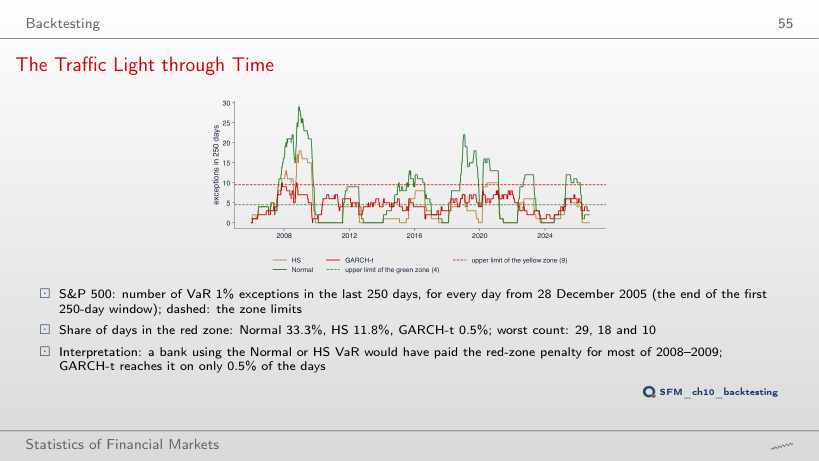
Answer
One third (33.3%); HS 11.8%, GARCH-t 0.5%. The largest number of exceptions in 250 days: 29 for the Normal method, 18 for HS, 10 for GARCH-t. A bank with a Normal VaR would have paid the red-zone penalty (BCBS (1996b)) for most of 2008–2009.
Backtesting ES: Acerbi and Székely
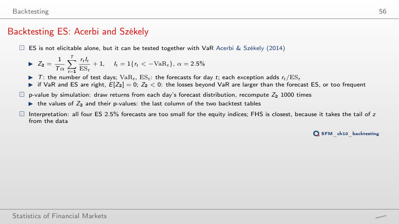
Worked example: the Z₂ statistic
Answer
Negative for all four methods: HS −0.39, Normal −1.15, GARCH-t −0.54, FHS −0.20 (p 0.013 for FHS, below 0.001 for the others). The losses beyond VaR are larger or more frequent than ES forecasts; FHS is closest to 0 because it takes the tail of z from the data.
Daily log returns, in %: S&P 500, DAX and BET from January 2000, Bitcoin from September 2014 (7 days a week), Banca Transilvania (TLV) and OMV Petrom (SNP) from 2010, from the adjusted price, to 18 September 2026; the two erroneous TLV days of May 2016 are removed. The portfolio: simple returns of the BET and the S&P 500 on the 6,466 common days. EODHD prices. From the returns the browser computes the historical, Normal, Cornish–Fisher and EVT VaR and ES, the 500-day HS and Normal forecasts, the correlations, the pseudo-observations and the tail dependence; the Student-t, GPD and GARCH(1,1)-t parameters are those estimated by the code of the lecture. The rolling GARCH-t and FHS forecasts (re-estimated every 250 days) are rebuilt from the conditional volatility and the parameters of each re-estimation; the exceedances, the Kupiec and Christoffersen tests, the Basel traffic light, the quantile loss and Z₂ are recomputed in the browser. The p-values of Z₂ (1000 simulations), the bootstrap (2000 resamples) and the copula simulations (200,000 draws) come from the code of the lecture. Other EVT thresholds, windows, levels, portfolio weights, seeds and evaluation starts, and the Basel capital requirement computed from the forecasts, are extra runs of the same code.